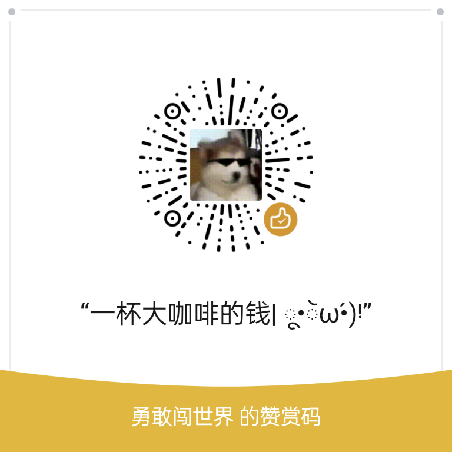

在butterfly主题中添加rss订阅
一、引言
由于我用的是butterfly主题，而在我写文章之前，主题文档内并没有和RSS订阅有关的教程，不过我在寻找各大搜索引擎时发现了这么一个插件，用的人也挺多。我也是打算写一篇文章记录一下我在hexo第一次折腾的事迹哈哈
二、安装rss插件并在主题中设置
在butterfly的插件推荐中有说明了hexo的rss插件，叫hexo-generator-feed
- 首先添加插件，这里使用的是npm添加
1
npm install hexo-generator-feed --save
- 然后在根目录中的_config.yml中添加如下配置
1
2
3
4
5feed:
enable: true
type: atom
path: atom.xml
limit: 20
官网还说明了一些其他的参数，如：
- enable: 默认开启可以省略
- type: RSS的类型(atom/rss2)
- path: 文件路径，默认是 atom.xml/rss2.xml
- limit: 展示文章的数量,使用 0 或则 false 代表展示全部
- hub: 如果使用不到可以为空
- content: （可选）设置 true 可以在 RSS 文件中包含文章全部内容，默认：false
- content_limit: （可选）摘要中使用的帖子内容的默认长度。 仅在内容设置为false且未显示自定义帖子描述时才使用。
- content_limit_delim :（可选）如果content_limit用于缩短帖子内容，则仅在达到字符限制之前在此分隔符的最后一次出现处剪切。默认不使用。
- icon: (可选）自定义图标。默认为主配置中指定的电子邮件头像。
- autodiscovery: 添加提要自动发现，默认开启
- template : 自定义模板路径。该文件用于生成 xml 文件
然后去主题的_config.yml中添加配置
1
rss: /atom.xml
这样你在用hexo g生成静态网页的时候会在public文件夹中（也就是你静态网页文件夹中）生成一个atom.xml文件
（可选）如果你想让别人知道你的RSS链接，可以在主题中的social settings中添加如下配置（就是在那侧边栏个人资料下面添加一个图标并链接到你的RSS文件）
1
fas fa-rss: /atom.xml
因为butterfly主题中有自带的fas图标，所以直接可以使用
本博客所有文章除特别声明外，均采用 CC BY-NC-SA 4.0 许可协议。转载请注明来自 幻想の小窝！
- 微信支付
- 支付宝
评论